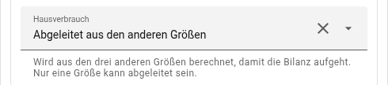
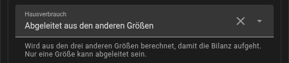

solar + Bezug − Einspeisung + Entladen − Laden = house
Fehlende Größen ableiten
solar, grid, house und battery bilden eine Gleichung:
Lässt man house weg, leitet die Karte es ab. Soll stattdessen eine der
anderen abgeleitet werden, wird sie ausdrücklich benannt:
entities:
solar: sensor.pv_leistung
grid: sensor.netz_leistung
house: sensor.hausverbrauch
battery: derived # kein Sensor für die BatterieleistungIm Editor heißt das bei der Größe Abgeleitet aus den anderen Größen:


Genau eine Größe darf abgeleitet werden — zwei Unbekannte lassen sich aus einer Gleichung nicht bestimmen, und die Karte sagt das, statt zu raten. Abgeleitete Knoten sind gekennzeichnet und nicht anklickbar, weil keine Entität dahinter steht, deren Verlauf man zeigen könnte.
Verlauf für den abgeleiteten Wert? Ein abgeleiteter Knoten hat keine
Entität, also kann ein Tipp darauf keinen Verlauf öffnen. Wer den will, lässt
Home Assistant dieselbe Summe rechnen: Helfer Template → Sensor (Einheit W,
Geräteklasse power, Zustandsklasse measurement - ohne sie keine Statistik
und keine Energiewerte, siehe Energie) mit
{{ [0, states('sensor.pv_leistung')|float(0)
- states('sensor.einspeisung')|float(0) + states('sensor.bezug')|float(0)
+ states('sensor.batterie_entladen')|float(0) - states('sensor.batterie_laden')|float(0)]|max|round(0) }}und diesen Sensor als house eintragen. Es ist die Formel der Karte, nur wird
sie jetzt aufgezeichnet — Verlauf, Statistik und Automationen bekommen sie mit.
Zur Genauigkeit: Den Hauswert abzuleiten ist bequem, aber nur so gut wie seine Eingangswerte. Auf der Referenzanlage lag er, aus 60-Sekunden-Sensoren für Netz und Batterie abgeleitet, bei Lastwechseln bis zu 8,7 kW daneben, während ein gemessener 5-Sekunden-Sensor binnen 4 Sekunden folgte. Wer einen schnellen Haussensor hat, sollte ihn nehmen.
Die Ausnahme ist ein Haussensor, der nicht die ganze PV sieht. Ein
Hybrid-Wechselrichter berechnet „Haus" aus seinen eigenen Strings, dem Netz und
der Batterie; ein Mikro-Wechselrichter, der hinter dem Zähler einspeist,
erscheint darin als weniger Hauslast, nicht als Erzeugung. Enthält solar
solche Quellen und stammt house vom Wechselrichter, ist das Haus um genau
diesen Betrag zu klein — siehe Balkonkraftwerk und weitere PV.